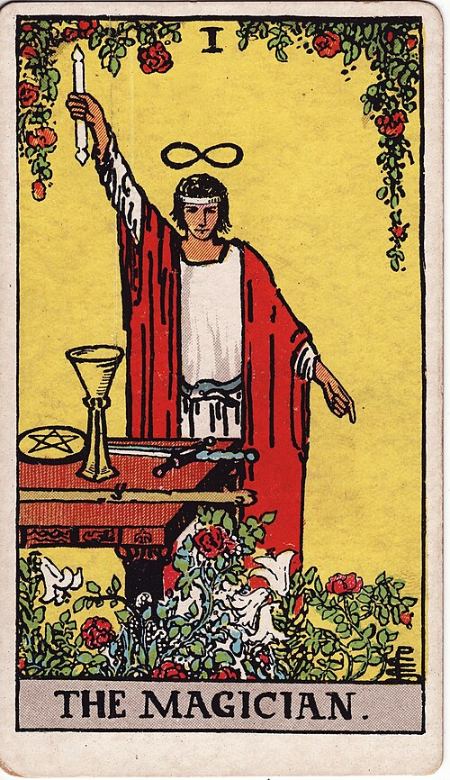
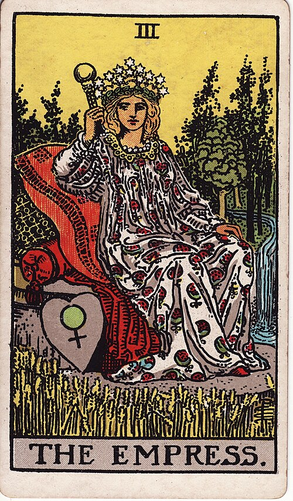
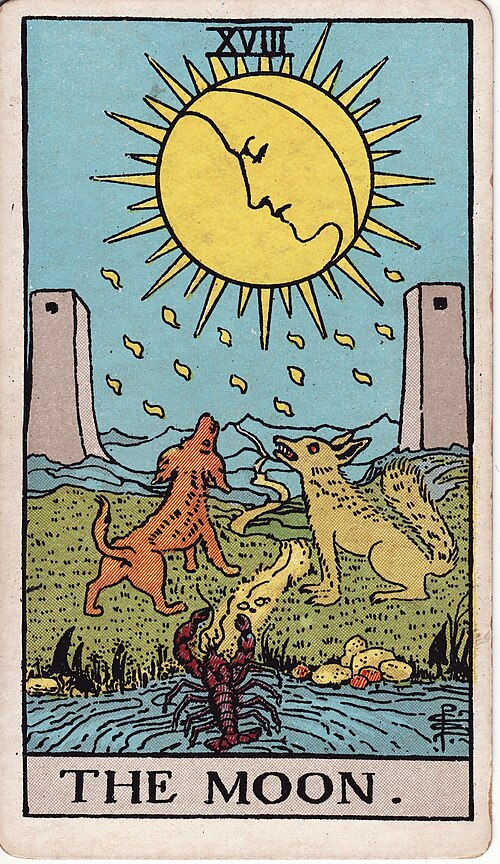
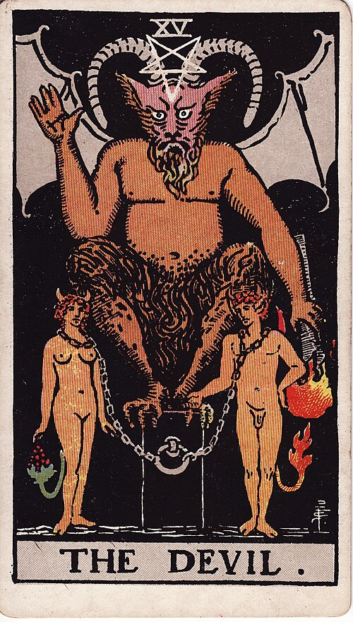
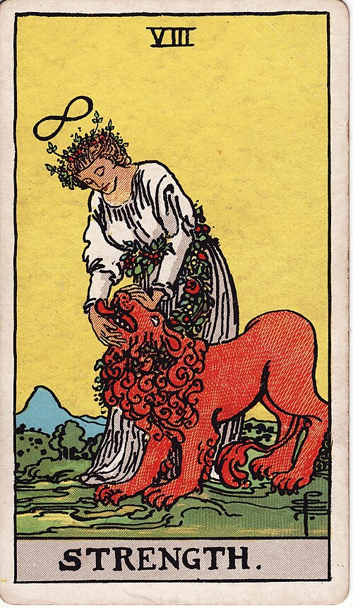
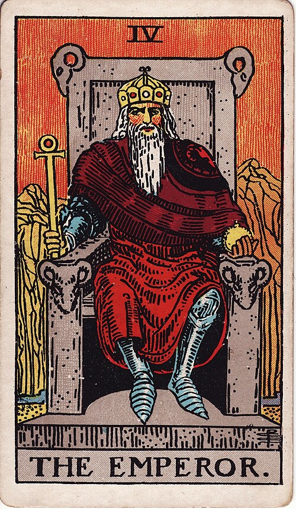
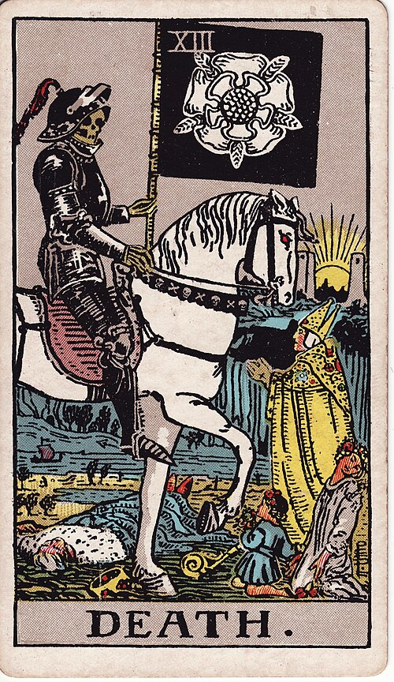

A worked example · in slides
Ninety Days
The community's first 90-day Pop-Up challenge: build the ResonantOS core —
the small program that lets different AI tools and agents plug in and work together safely.
Mapped across all 22 cards, with no single score anywhere.
map · build · wobble · turn · launch · close
ResonantDAO · Contribution Economy · the 22 cards in action
The story in one breath
Ninety days, one real build
The community runs its first 90-day Pop-Up challenge. The project is real: the ResonantOS core — the small program that lets different AI tools and agents plug in, talk safely, and be unplugged without anything breaking. Six people take it on: a lead builder, a co-builder, a newcomer who knows nothing, a writer, an auditor, and an operator. They spend the first two weeks mapping the system instead of rushing into code. In week six, a buggy tool crashes the live demo and leaks test data. The audit that follows finds the old rule let a tool be tested with more access than it needed. The team pauses, re-thinks, changes a rule, and settles the ledger. Then the core launches to a small real audience — and the 90 days close on purpose, with the core handed over as a standing project.
One build. Six people. All 22 cards — each one earned by a record, not by hours.
A worked example with a real container — the 90-day Pop-Up challenge — and a real project — the ResonantOS core. The week-by-week story is a realistic composite; the point is how the ledger reads a build like this.
Six people, one team
The cast
Adelead builderDrives the core from day one. The deep systems side.
Noorco-builderThe outside side: what it feels like to plug something in. Takes Kai under her wing.
Kaithe newcomerDay zero, knowing nothing. Ends up shipping the safety test that proves the guard works.
Marathe writerThe docs, the incident write-up, and the "what we learned."
Julesthe auditorChecks the logs. Names the hole in the rule out loud.
Samthe operatorKeeps the 90-day season running. Stops the crash.
Roles the community already has. The ledger measures what they did — not who they are.
Ninety days, five acts
The shape of the build
The acts follow the days, not the cards. The cards will come, one by one.
Act I
days 1–14
The map
Before any code: the whole system gets mapped, and the real gap is found.
Act II
days 15–45
The build
Pairs build the core. A newcomer is mentored. The docs get written. The season turns.
Act III
days 46–60
The wobble
A buggy tool crashes the demo and leaks test data. The logs get checked. The hole gets named.
Act IV
days 61–75
The turn
One sentence changes the plan. A rule gets adopted. The audit finds the ledger under-counted the care.
Act V
days 76–90
Launch & close
The core goes live to real people. The 90 days end on purpose. The ledger settles.
The contrast
What the other ways of counting see
An hours log
Ade 640h · Noor 410h
Kai 230h · Mara 210h
Jules 95h · Sam 120h
The care for Kai: not counted. The sentence that changed the plan: not counted. The person who named the hole: not counted.
A task board
58 issues closed
1 incident fixed
1 launch shipped
The argument that nearly split the team: zero issues. The pause that saved the build: no issue.
A single score
7,412points
One number. A leaderboard turns caring into a race — and you can never see who did what.
Same ninety days, three records — and in all three, the part that actually held the team together is missing from the record.
How the ledger works
Five rules, in plain words
One action can light several cards. Helping a newcomer, writing the docs, and settling an argument can all be the same afternoon.
A card only counts when there's proof. Not because it sounds nice — because there's a record that it happened, and that it mattered.
"Not counted yet" is not "zero." If we can't measure it yet, we write it down as "not counted yet." We never pretend it was nothing — and we don't let it fade away.
The outcome gets paid, never the hours. We don't pay for hours, messages, or showing up. We pay for what those hours produced.
Every payment has a rule and a date. When it pays, who checks it, and a stranger can re-do the math from the record.
The 22 cards come from the Major Arcana — a 350-year-old map of action. We borrowed the vocabulary; the measuring is ours.
Act I · days 1–14
The map
Before writing any code, the team maps the whole system.

09The Hermit
The map: where tools connect, what's missing, where one change would move everything. The real gap turns out to be the layer that keeps connections safe — not more protocols.
paid when the finding is used
06The Lovers
The pair forms: a systems builder and an outside-facing builder. The core is something neither could build alone.
shared pool, split as agreed00The Fool
Kai walks in: day zero, no experience, everything to prove. A threshold — not yet a path.
a checked zero
Kai's joining is recorded as a zero we checked — a new person, nothing yet to count. The Fool gets paid at the end, on the crossing.
Act II · days 15–45
The build
Pairs build the core. A newcomer is mentored. The docs get written.

01The Magician
The core works: the first real connection — a tool and an agent, talking safely through the core, and real people using it.
paid when it's used
03The Empress
Noor takes Kai under her wing: the first task, the side-by-side work, the patience no ticket will ever show.
counted at the end of the 90 days
02The High Priestess
Mara writes it down: the architecture, the decisions, where everything lives — findable by anyone, credited to its author.
paid on publishing + usage
07The Chariot
"First live connection" — the milestone — hit on schedule, inside the 90-day promise.
milestone bounty (reduced later — see Act III)
10The Wheel
The 90 days run like a season: bounties keep paying out on schedule through all of it.
recorded · retainer at the end
Act III · day 48
The wobble
A buggy tool crashes the live demo — and leaks test data.

16The Tower
The crash: Sam pulls the plug, reverses the bad connections, files the note. What gets paid is the work of stopping it — the crash itself never pays.
paid when it's stopped
18The Moon
"Did the leak really happen?" Jules checks the logs. The check gets paid no matter what it finds.
paid per check07The Chariot
The milestone still paid — but reduced by the cost of the mistake it shipped. The reward doesn't bank the damage.
paid, minus the mistake03The Empress
Kai is struggling, and no one says it out loud. Ade and Sam quietly cover shifts and check in. No deliverable. No hours logged.
not counted yet
What the ledger says · day 48
The care is "not counted yet". It happened; we just can't measure it yet. That is not zero — and it never becomes zero. The debt is the system's, not Kai's. On day 90 this line gets added in, counted as if it happened this week.
Act III · days 55–60
The naming
The audit goes deeper. The argument gets settled.

15The Devil
The hole: the old rule let a tool be tested with more access than it declared it needed. Jules names it out loud, the group confirms it's real — and the reward for naming it can't be blocked by the people it points at.
paid for naming it
08Strength
The argument: patch it fast for the deadline, or rebuild the guard properly? Ade and Noor can't agree. Mara — who wasn't in the argument — breaks the tie. Both accept, in writing.
paid when both accept09The Hermit
The root cause: Jules digs into why the hole existed and finds the real reason — not the surface one. The finding shapes what the group decides next.
paid at the end, when adopted
Jules holds two lines from the same audit: the check (Moon) and the naming (Devil). One person, several cards — that's what a profile is.
Act IV · days 61–75
The turn
One sentence changes the plan. A rule gets adopted. The audit finds the gap in the ledger.

12The Hanged Man
After the hardest week, Ade writes: "we were counting lines of code, not whether the system holds." The team re-reads the plan through that sentence — and changes it.
paid because a decision changed
04The Emperor
The new safety rule — no component is tested with more access than it declares — decided together by the group, the lead builders stepping aside to vote.
a mark, not a payment
11Justice
The ledger gets re-checked: the quiet care wasn't counted fairly. The way we count gets fixed before the final settlement.
a fixed review
Act V · days 76–84
The launch
The core goes live to a small real audience.

05The Hierophant
The proof: Kai — who started knowing nothing — ships the safety test that shows the guard actually works. Accepted, used, cited.
paid when the competence shows
19The Sun
When the core works end to end, the community says so out loud — and names everyone who made it happen, from the builder to the tester to the one who wrote it down.
paid on the record
21The World
The whole thing works: every part of the core runs together, start to finish. And it starts the next 90 days — the next challenge, the next people.
the finished whole + the next seed00The Fool
The crossing: the team steps over from "a challenge" to "a standing project" — the core is now the thing people plug into. A path others will walk.
paid — the crossing
Act V · days 85–90
The close
The 90 days end on purpose. The ledger settles.

13Death
The challenge ends — that's the point of a pop-up. Everything we learned is written down and archived; the core is handed over as a standing project. An ending, not an abandonment.
a clean close
20Judgement
Day 90: the whole ledger settles. The care from week six gets added in — counted as if it happened when it happened. Nothing settles until the audit in Act IV is done.
settled at the end10The Wheel
The season finishes: 90 days, on schedule, with every bounty handled fairly. Paid for the season being fair — not just for finishing on time.
a fair season
14Temperance
After the rule change, the core's health checks stay green for a full month. The steady holding itself is paid — with a watch for frozen numbers that fake stability.
paid for the state held
17The Star
The story of these 90 days gets written up — and the next group of newcomers uses it as their onboarding. Paid for the effect, not for the writing.
paid for the effect
The reveal
The whole build, twenty-two cards
00The Fool
Kai walks in (0) · the team crosses over
checked 0 + paid crossing01The Magician
the core works: the first safe connection
paid when used02The High Priestess
the docs · the incident write-up · what we learned
publishing + usage03The Empress
Kai mentored · Kai cared for
counted at the end04The Emperor
the safety rule, decided together
a mark, not a payment05The Hierophant
Kai's safety test, accepted and used
competence shown06The Lovers
a pair, a shared pool
split as agreed07The Chariot
the milestone, minus the mistake
paid, minus mistake08Strength
the argument, settled by a third
both accept09The Hermit
the map · the root cause
paid when used10The Wheel
the 90-day season, kept turning
a fair season11Justice
the audit that found the gap
a fixed review12The Hanged Man
the sentence that changed the plan
decision changed13Death
the challenge, closed on purpose
a clean close14Temperance
the health checks, held green
the state held15The Devil
the hole in the rule, named
paid for naming16The Tower
the crash, stopped
when it's stopped17The Star
the 90 days, made onboarding
paid for the effect18The Moon
the logs, checked
per check19The Sun
the core working, celebrated
paid on the record20Judgement
the ledger settles, care added in
settled at the end21The World
the whole thing works, the next seed
the finished wholeThe colors
gold — paid or added in
amber — counted at the end of the 90 days
gray — a mark, not a payment
The shape
27 records · 22 cards · 6 people · 90 days. No single score, no leaderboard. Every line can be re-done from the record.
The point of the exercise
Why no other way of counting could hold this
A single score says
7,412 points. It can't say who cared, who named the hole, who wrote the sentence that changed the plan — or that the care happened four weeks before anyone could prove it. The profile, which is the whole point, is gone.
The 22 cards say
27 lines. Each with its own proof, its own rule, its own date. The care sits as "not counted yet" for four weeks, then gets added in at the end, counted as if it happened then. The milestone pays less, because the mistake is real. Naming the hole pays — and can't be blocked by the people it points at. The sentence pays, because a decision changed.
If a future build has a kind of work these 22 can't describe, that gap gets written down — and the map grows on evidence, never on guesses.
What this proves
The test we run on the ledger
The design question is simple: can the ledger describe any real piece of community work? This 90-day build is one instance of that test, run on a real-shaped project.
The cards don't blur together. All 22 light up in one build, and each is a different kind of help: the crash (Tower) is not the planned close (Death) is not the finished whole (World); looking after someone (Empress) is not proving you can do the work (Hierophant); finding a thing (Hermit) is not crossing into a new stage (Fool).
Several cards at once is normal. The wobble is, at the same time, the Tower (the crash), the Moon (checking the logs), the Devil (the hole behind it), and the Chariot's mistake (the cost on the milestone) — without flattening into "there was an incident."
If work doesn't fit, we notice. If a real contribution can't be described by the cards, that's a gap in the map — we write it down and fix the map. It is never the member's fault.
And you can watch the fairness rules working: "not counted yet" becomes paid at the end (the care) · the mistake reduces the reward (the milestone) · no leaderboard (the story ends in credit, not ranking).
Ninety days · end of example
The map is 22.
The filling is open.
This is a community that can measure its own care without turning it into a number.
The profile stays visible. The total stays a rough guide. And when the map has a gap, the gap becomes the next lesson.